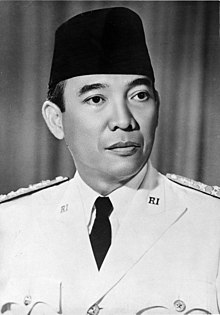

Dr. (H.C.) Ir. H. Soekarno[cat.] (Ejaan Republik: Sukarno, bahasa Jawa: ꦯꦸꦑꦂꦟ, pengucapan bahasa Jawa: [suːˈkarnɔ];[2] 6 Juni 1901 – 21 Juni 1970)[cat. 1][cat. 2] adalah seorang politikus yang berperan penting dalam Revolusi Nasional Indonesia. Ia bersama Mohammad Hatta memproklamasikan Kemerdekaan Indonesia pada tanggal 17 Agustus 1945. Ia orang pertama yang mencetuskan konsep mengenai Pancasila sebagai dasar negara Indonesia dan ia sendiri yang menamainya. Selain sebagai proklamator, Soekarno juga menjabat sebagai Presiden Republik Indonesia pertama sejak 1945 hingga 1967, dengan masa pemerintahannya dikenal juga sebagai Orde Lama.[8]:11, 81[7]:26-32 Pada pertengahan tahun 1960-an, di masa-masa akhir jabatan Soekarno, Indonesia mengalami stagnasi produksi, kemiskinan dan kelaparan yang merajalela, infrastruktur yang tidak terurus, dan hiperinflasi mencapai hampir 600 persen. Pada 11 Maret 1966, Soekarno menandatangani Surat Perintah yang dikenal sebagai Supersemar yang menugaskan Letnan Jenderal Soeharto untuk mengamankan dan menjaga keamanan negara dan institusi kepresidenan.[7] Supersemar menjadi landasan Letnan Jenderal Soeharto untuk membubarkan Partai Komunis Indonesia (PKI) dan mengganti anggota-anggotanya yang duduk di parlemen.[7] Setelah pertanggungjawabannya ditolak Majelis Permusyawaratan Rakyat Sementara (MPRS) pada sidang umum ke empat tahun 1967, Soekarno diberhentikan dari jabatannya sebagai presiden pada Sidang Istimewa MPRS pada tahun yang sama dan Soeharto menggantikannya sebagai pejabat Presiden Republik Indonesia. |  |